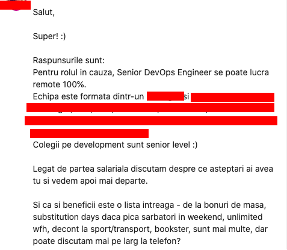

Cât de direct ar trebui să fii la interviu?
by Adrian Harabulă on 13 January, 2020
De multe ori toată fuga asta la interviuri înseamnă multe plimbări și să bei cafele și să faci orice altceva decât ce ai face în mod deobicei dacă ai fi angajat, și anume treabă. Cât cât omul e mai entuziasmat să participe la interviu, să înceapă, să discute, cu atât sunt șanse să fie doar vorbe. Cei care fac treaba, o fac și atât. Nu se laudă, nu fac taifas, termină treaba cât mai repede și merg acasă la viețile lor.
Iată ce zic alții mai avansați pe subiect legat de procesul de intervievare:
Dar oare chiar merge? Sau sunt doar povești? Cum adică să îți pui condițiile tale la interviu? Hai să încercăm și noi.
Prima abordare
Începem timid cu faptul că vrem să știm mai multe despre oportunitate înainte de apel. Nu am mai primit răspuns înapoi. Atenție aici, că poți sta ore întregi de vorbă în discuții și polemici. Unii recrutori sunt doar pe filmul lor. Lasă-i așa. Nu îți bate capul, vezi-ți de drumul tău.
A doua încercare
Minunat, avem și răspuns de data asta, scurt și la obiect.  Nu e mai ușor așa să stabilim unele chestii de la început fără să pierdem timp la telefon sau întâlniri față în față?